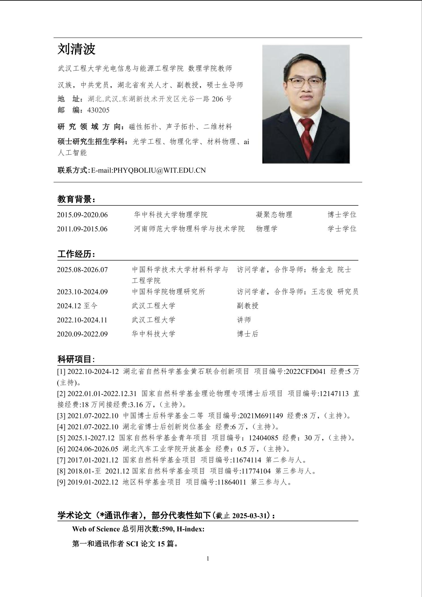

课题组导师
GROUP SUPERVISOR
刘清波 副教授
刘清波
副教授 · 硕士生导师
刘清波，男，武汉工程大学光电信息与能源工程学院、数理学院教师，副教授，硕士生导师，湖北省有关计划人才。
研究方向包括磁性拓扑、声子拓扑、二维材料及相关的理论与计算研究。
2015 年毕业于河南师范大学物理科学与技术学院物理学专业，获理学学士学位。
2020 年毕业于华中科技大学物理学院凝聚态物理专业，获理学博士学位。
2020 年 9 月至 2022 年 9 月在华中科技大学从事博士后研究，2022 年 10 月入职武汉工程大学。
曾赴中国科学院物理研究所和中国科学技术大学材料科学与工程学院开展访问研究。
主持国家自然科学基金青年项目、国家自然科学基金理论物理专项博士后项目、湖北省自然科学基金黄石联合创新项目等科研项目。
截至 2025 年 3 月，以第一作者或通讯作者在 Materials Today Physics、Physical Review B、Advanced Functional Materials 等期刊发表多篇研究论文。
电子邮箱：phyqboliu@wit.edu.cn
磁性拓扑声子拓扑二维材料第一性原理计算
教育背景
- 华中科技大学物理学院，凝聚态物理，博士学位
- 河南师范大学物理科学与技术学院，物理学，学士学位
工作与访学经历
- 中国科学技术大学材料科学与工程学院访问学者，合作导师：杨金龙院士
- 武汉工程大学，副教授
- 中国科学院物理研究所访问学者，合作导师：王志俊研究员
- 武汉工程大学，讲师
- 华中科技大学，博士后